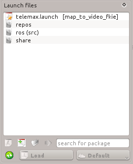

The Launch Dock can be used to find and load or edit the launch files. The root contains the paths defined by ROS_PACKAGE_PATH environment variable. In addition, all subfolders are skipped, do not contain the *.launch or *.yaml files. The extentions can be changed in the settings dock.
On load, the launch file itself and all included files are added to QFileSystemWatcher. If one of this files will be changed, you will prompt to reload the launch file. If changes for a node are detected you will be asked to restart the changed node. In the root also will be shown a history of last five loaded launch files. When needed, the selected history files can be removed by pressing the Delete button.
You can also search for a package where the launch-file is located.
Launch control buttons:
|
Refresh the current path. |
| Opens the launch file in a Launch Editor. | |
|
Creates a new launch file. |
|
Loads a launch file selected by open dialog. |
|
Copies the selected file to a remote hosts. Optionally, the included files are copied, too. |
|
Loads the launch file and show the content on the selected host. |
|
Loads the file as Default configuration on a selected host.
|


 If the selected host is a remote host, then the content of remote launch file will be load.Use transfer button to copy the changes to remote host first.
If the selected host is a remote host, then the content of remote launch file will be load.Use transfer button to copy the changes to remote host first.